Here is a very old way to extract a 'matte' transparency values from an
image. It saves the transparency channel as a 'matte' image file format, and
required two separate steps, and commands to define the right image file
format.
convert moon.png matte:moon.matte
convert MIFF:moon.matte moon_matte2.png
# You can join those two steps in a pipeline as well...
convert moon.png matte:- | convert - moon_matte3.png
| |
|
This technique for extracting the 'matte' of an image was common when IM v5
was in use. Basically it was the only method provided to get access to the
transparency of an image. It is now very rarely used.
Controlling Image Transparency
There are two operators that give you low-level control of the transparency
channel of an image in memory. The newer operator "-alpha" methods are now the
recommended method of control, though many IM Examples still show and use the
older "-matte" operator.
An image cannot only have alpha channel data, but it also has a 'switch' that
defines if the channel data is viewable or valid. This means images can have
three states with regards to the alpha channel.
| Switch | | Channel Data
|
|---|
| alpha off | no alpha data (no memory has been allocated)
| | alpha off | old alpha data present (but not in use)
| | alpha on | alpha data that is currently in use
|
This needs to be remembered as how the various methods behave depends on which
of the above three states the image was in.
If the 'switch' is off operators will not touch the alpha data, as it may not
actually exist at all. In such a case old alpha could still be present,
unmodified, and thus out-of-date. As you will see this is actually sometime
useful in some situations.
Note however that some operators may automatically turn on, or turn off the
alpha switch for one reason or another.
For example, "-compose CopyOpacity -composite" will always turn on
the alpha channel in the resulting image, as it is the operator's job to copy
data into an alpha channel. As such it must exist in the final result. However
its existence in the input data can have other consequences. See Copy_Opacity Composition Method for more
details.
Similarly creating a canvas using the color 'None' will also
automatically create and enable the transparency channel, so as to ensure the
blank image really is transparent. On the other hand, creating a canvas using
some other Color Name will generally not
create any transparency channel as images are opaque by default.
Here are the various "-alpha" methods and examples of how they effect images and their
transparency.
Alpha Off or "+matte"
This is just a simple switch on the image, which turns off any effect the
transparency has on the image. It does not actually delete or destroy the
alpha channel attached to the image, it just turns off any effect that channel
has on the image. Similarly no operator will effect the attached alpha
channel while it has been turned off.
For example let's use the 'crescent moon' image (from a CopyOpacity Composition example), and
simply turn the image alpha channel off.
convert moon.png -alpha off alpha_off.png
|

![[IM Output]](../images/masking/alpha_off.png)
Note that the moon shape completely vanished when the transparency was turned
off, though that is actually rarely the case. Basically even the 'transparent'
areas have color, which is just not normally visible, in this case the hidden
color was the fractal canvas image that was used to create the moon image.
This hidden color could be anything, from a simple GIF Transparency Color, that the GIF format
uses to represent transparency in its color table, to garbage colors left
behind during the images creation, as above. More typically the transparency
color is simply pure-black for any pixel that was fully-transparent. Note
that pixels close to the edge may be semi-transparent, and thus still have
a valid color that is only partially visible.
The "-alpha Off"
operation in the above will have simply 'deactivate' or 'turn off' the
channel. The transparency data itself has not been cleared or removed from
the image data stored in-memory. It is still present, just unavailable for
the moment. But...
If the image is saved, while the transparency data is turned off, none of the
transparency data will be saved into the image file format. As such the
turned-off alpha data is not present in the saved copy of the image, even
though it is present (just turned off) in the in-memory version.
Also as many file formats do not allow transparency (such as JPEG), these file
formats automatically do the equivalent of a "-alpha Off" when the image is
saved (without actually doing so). Generally this results in all transparent
areas typically turning black when saved as a JPEG image. See Alpha Remove - Removing Transparency below for the
correct way to remove transparency before saving to a JPEG file format.
The "+matte" operator is
an older command that is exactly the same as "-alpha Off". That
is it just turns off the transparency channel.
Note that turning off alpha, is often required before using a gray-scale mask
image with the CopyOpacity Alpha
composition method. If you don't do this the compostion operator will copy
the enabled transparency (opacity channel) rather that use the intended
grayscale colors.
Alpha Set or "-matte"
The 'Set' alpha method is the same as the older "-matte" option.
This ensures that the image has a 'transparency' or alpha/matte channel, but
if it was not present or turned off, that it is initialised to be fully-opaque
(See the Alpha Opaque method below).
However if the image already has an alpha channel present and enabled, it will
do nothing.
In other words this operator ensures an alpha channel is present, without
modifying the look of the image as it is currently in memory. As such on its
own this operator does not show any change to the image, but has real effects
when combined with other operators.
So if you turn off the alpha channel using Alpha
Off, and then enable it again using Alpha Set,
the image will have an alpha channel, but it will be fully-opaque, just as the
image looked, when 'Set' operation was requested.
convert moon.png -alpha off -alpha set alpha_set.png
| |
|
If applied to an image that has an enabled alpha channel, no change is made.
convert moon.png -alpha set alpha_noset.png
| |
|
In summery, this operator should never change the appearance of the image, at
the time the operator is applied. It just ensures the alpha channel set up
such that the image is left as is.
This is typically used after reading images from an unknown image file
format, or input source, which may or may not have an alpha channel present.
This operator will then ensure that the image does have an alpha channel (for
image formats like JPEG), but leaving any enabled and existing alpha channel
alone (such as for GIF or PNG formats).
This is the recommended way of ensuring an image has an alpha channel after
reading it into memory, or more importantly, after an image has been processed
and you want to re-enable a clean alpha channel.
Alpha On
The "-alpha On" is the
exact opposite to the previously looked at Alpha Off
method. Typically this is too simplistic for the purpose you are
wanting and as such should be very RARELY used. You should use "-alpha Set" in almost all cases.
Basically 'On' method just flips the switch so that the image
transparency data is visible again. Any existing transparency data is not
modified, so if the in-memory image still has some old alpha channel data,
that data will suddenly be visible again.
For example here we turn 'Off' the transparency data, then
immediately turn it back 'On, reproducing the original image.
convert moon.png -alpha off -alpha on alpha_on.png
| |
![[IM Output]](../images/masking/alpha_on.png)
|
However if the image does not have any previous alpha data (yet) it will
initialize it to be fully-opaque. Which is the logical thing to do. As such
for new images just read into memory, it is equivalent to Alpha Set, but it should not be used for this purpose.
The only time Alpha On should be used
is when you previously, and purposefully turned off alpha for some
reason, and now wish to restore that data.
For example turning the alpha channel off then on can be used to preserve the
alpha channel data before applying some very specific operators, such as
"-shade".
For an example of this special usage see Shaded Shape Images.
Alpha Opaque
This method not only ensures the alpha channel is 'active' but that it is also
completely opaque, regardless of if the image had transparency 'activated/on'
or 'deactivated/off'. For example...
convert moon.png -alpha opaque alpha_opaque.png
| |
![[IM Output]](../images/masking/alpha_opaque.png)
|
On older versions of IM, this was equivalent to using both "+matte" to turn off the alpha
channel, then using "-matte" to turn it on, while resetting it to be opaque.
convert moon.png +matte -matte alpha_opaque_matte.png
| |
![[IM Output]](../images/masking/alpha_opaque_matte.png)
|
The original 'shape' of the image can no longer be recovered after this
operation as the original alpha channel data has been overwritten.
Of course that is also equivalent to using "-alpha off -alpha
set", though you may as well use "-alpha opaque" in that
case.
Alpha Transparent
Similarly this ensures the alpha channel is 'active' but also fully
transparent.
convert moon.png -alpha transparent alpha_transparent.png
| |
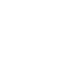
|
The color data of the image is still present, so turning off transparency
afterward will again show the images existing colors.
convert moon.png -alpha transparent -alpha off alpha_transparent_off.png
| |
|
Of course the original 'shape' of the image was actually destroyed, so it can
no longer be recovered after this operation.
Other ways of making an image fully transparent is presented in Transparent Canvas.
Alpha Extract
The 'Extract' method will simply copy the 'alpha' mask of the
image as a gray-scale channel mask.
convert moon.png -alpha extract alpha_extract.png
|
![[IM Output]](../images/masking/alpha_extract.png)
Note that fully-opaque is white, while fully-transparent is pure black.
As image contained some semi-transparent pixels along the edges (for
anti-aliasing providing the images shape with a smoother look), this image is
not pure black and white, but also contains some gray colored pixels around
the edges.
If your ImageMagick is an old IMv6 version, this is a (near) equivalent
technique, using channel extraction.
convert moon.png -channel a -separate +channel -negate alpha_extract.png
|
The 'Extract' method will also
turn 'Off' the alpha, but it is
not cleared, so turning the alpha channel back 'On' will re-create a shape mask of the original image.
convert moon.png -alpha extract -alpha on alpha_extract_on.png
| |
|
Note that all the original colors will have been replaced with white with
various shades grays around the edges. We can see this if we remove the
transparency with a white background, (See Alpha
Remove method below)
convert alpha_extract_on.png -background white -alpha remove alpha_edge.png
| |
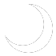
|
These 'gray' pixels are actually used to good effect in Edge Outlines from Anti-Aliased Shapes to
generate a smooth edge or outline from an image shape.
This side-effect of saving the alpha channel, has particular benefits when
Using the Shade Operator, which does not
understand or use the alpha channel of an image. See the sub-section, Masking Shaded Shapes.
Alpha Copy
The 'Copy' method is the reverse of 'Extract', and essentially performs a CopyOpacity against itself. That is it
will turn a gray-scale image (regardless if its alpha channel is enabled or
not) into a shape mask image.
convert alpha_extract.png -alpha copy alpha_copy.png
|
It does not matter if the image had an existing alpha channel or not, all it
does is create the images transparency from the image gray-scale values.
Once you have a shape mask, you can use various Color Tinting or Duff-Porter alpha composition methods, to
color it. For examples of using a shape mask see Masks as
Colored Shapes.
Alpha Shape
To make use of a gray-scale image easier, the 'Shape' method not
only creates a shape mask (as per Alpha Extract,
but will also color it using the current background color.
convert alpha_extract.png -background Yellow -alpha shape alpha_shape.png
|
This means you can very quickly color a gray-scale mask simply by shaping the
image, then flattening it onto a different background color
convert alpha_extract.png -background Yellow -alpha shape \
-background Blue -alpha remove alpha_colormask.png
| |
|
  |
Background is not actually the right color to use for this 'shape' coloring
operation. It should be using the 'fill' color to set the shapes foreground
color. As such which color should be used is likely to change. Background
is only used due to internal difficulties in accessing the current fill
color. This change will likely happen as part of IMv7.
|
Of course a faster and better way to map a black and white image, directly to
specific colors is by using the more specialised Level Adjustment by Color. This will
avoid the need to enable or even modify the existing images transparency
channel.
convert alpha_extract.png +level-colors Blue,Yellow level_color.png
| |
|
 |
The above will map the colors using a linear colorspace, and may need to be
converted to sRGB at some point to get a more visually correct gradient of
colors.
|
Alpha Remove
The "-alpha
Remove" method (added to IMv6.7.5) is designed to remove the
transparency from an image, using the current "-background".
convert moon.png -background tan -alpha remove alpha_remove.png
| |
|
Note that while transparency is 'removed' the alpha channel will remain turned
on, but will now be fully-opaque. If you no longer need the alpha channel you
can then use Alpha Off to disable it.
This operation is simple and fast, and does the job without needing any extra
memory use, or other side effects that may be associated with alternative
transparency removal techniques. It is thus the preferred way of removing image
transparency.
For other techniques, or if your ImageMagick is older that v6.7.5, then look
at the larger discussion Removing Transparency from
Images) below.
Alpha Background
As of IM v6.5.2-10, a 'Background' method was made available that
will set the hidden color of fully-transparent pixels to the current
background color.
Normally this color is of no consequence, as it can only be seen if the alpha
channel is turned off. However the color of
fully-transparent pixels is saved in PNG Image file format, and for large
images, having random unknown fully-transparent colors can significantly
effect its compression handling.
See PNG with Better Compression and
the IM Forum Discussion Eliminating alpha
channel garbage for more details.
Note that no color mixing is applied, only a direct color assignment to any
fully-transparent color. The pixels however will still remain
fully-transparent, and as such you will see not change to the image.
For example here I use it to set all fully-transparent pixels to
'HotPink'.
convert moon.png -background HotPink -alpha Background moon_hotpink.png
| |
|
As you can see this made no change to the actual look of the image.
To see the change we will now turn off the alpha
channel.
convert moon_hotpink.png -alpha off moon_hotpink_off.png
| |
|
The edges of the shape will have made all semi-transparent pixels opaque, and
as a result produced some strong aliasing (stair-cased) edge effects.
Note that even the normally opaque only format PNG24, can still save boolean
transparency if all the fully transparent colors are the same. For details
see the example in PNG Sub-Formats.
This process of replacing the colors is actually almost the same as doing
a "-channel RGB -fill color -opaque None +channel". See
Direct Color Replacement.
Note that many other image processing operators will also convert any
fully-transparent pixels, to fully-transparent black (color
'None'), as this is the color equivalent of a mathematical zero.
Here is a summary of some image operations that are known to do this, though
none are as direct or as fast as using this operator.
convert moon.png \( +clone -alpha off \) \
-compose SrcIn -composite moon_black.png
convert moon.png -channel RGBA -blur 1x.000000001 moon_black.png
convert moon.png -channel RGBA -gaussian 1x0 moon_black.png
convert moon.png -fuzz 0% -transparent none moon_black.png
|
That last method (see Fuzz Factor and
Transparent colors is particularly useful as you cannot only set all
transparent colors to full-transparent-black ('None'), but also
all near-fully-transparent colors (which otherwise does have a valid but
practically invisible color), simply by specifying a fuzz factor. It will
produce some data loss, but may improve compression in images with lots of
near-fully-transparent colors. Often these nearly total transparent pixels can
have very odd or wrong colors, and this method will allow you to remove such
odd pixels before they cause other problems.
Removing Transparency from Images
While the Alpha Off will simply flip a switch and
turn off the transparency channel. You can also get the same effect if you
attempt to save the image into a file format that does not allow the use of
transparency. For example by saving to JPEG...
convert -size 70x60 xc:none -font Candice -pointsize 50 \
-fill Black -annotate +10+45 'A' -channel RGBA -blur 0x5 \
-fill white -stroke black -draw "text 5,40 'A'" a.png
convert a.png a.jpg
|
Remember the JPEG File Format, does not save
the alpha (transparency) channel, and as such simply turned it off.
In this case transparent parts just became black (a typical result). But
depending on the image source the transparent areas could have just as easily
become some other random, or other inappropriate color.
Also in many cases semi-transparent pixels can have some very odd colors that
is typically not visible because they are almost completely transparent.
Simply turning off transparency will make these pixels stand out like a sore
thumb, making the result look even worse than you may have expected. See for
example the top-left edges of 'A' in the above.
In either case simply turning off transparency is typically NOT what is
wanted.
The best solution is to use the Alpha
Remove method to quickly and simply replace the transparency with
a background color underlay...
convert a.png -background skyblue -alpha remove -alpha off a_remove.jpg
| |
![[IM Output]](../images/masking/a_compose.jpg)
|
Strictly speaking the Alpha Off is not needed in
this case, as the save to JPEG does this automatically.
Alternative techniques of removing transparency, is to somehow generate a new
'background' or 'canvas' image and Over
Compose your image onto that background so that the transparency is
replaced. Preferably while preserving the original image's meta-data, such as
profiles, labels, captions and comments that may be present.
Methods for generating such a canvas is exampled in Creating Image Canvases of Same Size. Here is one such method...
convert a.png \( +clone -alpha opaque -fill SkyBlue -colorize 100% \) \
+swap -geometry +0+0 -compose Over -composite \
-alpha off a_compose.jpg
| |
|
Other simpler ways to do this, is to use an operation that internally creates
a 'cloned background canvas' for you, generating it as part of the
larger image processing operation that the operator is performing.
The most common method is to Flatten the
image. This operator is so often used for this purpose that the process of
removing transparency has often erroneously been called 'flattening'. For
example...
convert a.png -background skyblue -flatten -alpha off a_flatten.jpg
| |
|
However this will not work with "mogrify" or with a sequence of multiple images, basically because
the "-flatten" operator
is really designed to merge multiple images into a single image.
The other common method that does work with multiple images is to give the
image a zero sized Border with the appropriate
"-bordercolor". For
example...
convert a.png -bordercolor skyblue -border 0 -alpha off a_border.jpg
| |
![[IM Output]](../images/masking/a_border.jpg)
|
Other image processing operators which are closely related to the above
methods, can also remove transparency from an image. These include: Mosaic, Merge,
and Frame.
The Extent operator can also be used, and
allows you to expand or crop images at the same time as you remove the
transparency, but only if you know the size of final image you desire.
You do not have to replace transparency with a solid color. If you use a DIY
composition (as shown above) you can use any image for the replacement
background. One simple example of this is to use the "composite" command to Tile an image 'under' the original, (using Dst_Over). This compose method ensures the
original images meta-data and size is preserved.
composite -compose Dst_Over -tile pattern:checkerboard \
a.png a_undertile.jpg
| |
|
|
Many of the above methods, are either effected by, or may destroy any
virtual canvas information an image may have, as part of its processing.
When the virtual canvas is involved, you may need to look at the details of
individual operators more closely. In many cases the virtual canvas effects
can be useful to your overall image processing.
|
Boolean Alpha Transparency
For some image file formats you don't need to completely remove the alpha
channel, but only allow pure on/off or boolean transparency. Index (Palette)
image file formats such as GIF and PNG8, are typical of this.
Examples are currently looked at in GIF
Boolean Transparency, but should eventually move here.
Outline or Halo Transparency
Sometimes you will like to add an outline around an image containing
transparency.
One way is to use EdgeOut Morphology
to quickly get all the neighbouring pixels to the original image, color them,
and then Under (DstOver) Compose it with
the original image.
convert knight.png \( +clone \
-channel A -morphology EdgeOut Diamond +channel \
+level-colors red \
\) -compose DstOver -composite knight_outlined.png
|
This can be particularly useful when creating GIF format images from PNG images
containing semi-transparent edge pixels. It provides a minimal amount of
background color, but leave the rest of the image fully-transparent. See GIFs on a Background Pattern for more about
this problem.
An alternative method is to generate a soft semi-transparent halo around the
shape. To do this we Blur and recolor the image,
then again Under (DstOver) Compose it with
the original.
convert knight.png \( +clone \
-channel A -blur 0x2.5 -level 0,50% +channel \
+level-colors red \
\) -compose DstOver -composite knight_halo.png
| |
|
This last is actually similar to using a Soft Outline Compound Font effect, but using a shaped image rather than
annotated text.
Using Masks with Images
Masking An Image
As shown previously there are a couple of ways to mask an image, so as to make
part of the image transparent. And which method you choose depends on the
whether your image mask is a grayscale mask, or a shaped mask.
Editing an Image Mask
The mask of an image is a really useful thing to have.
We can for example erase parts of an image very easily by
modify a mask of the original image. Remember the "-draw" operator cannot draw
nothing, and currently has no erase option.
Here we create an image, then by extracting and modifying its mask, before
restoring it to the original image.
convert -size 100x100 xc:none -stroke black -fill steelblue \
-strokewidth 1 -draw "circle 60,60 35,35" \
-strokewidth 2 -draw "line 10,55 85,10" drawn.png
convert drawn.png -alpha extract mask.png
convert mask.png -fill black -draw "circle 40,80 60,60" mask_bite.png
convert drawn.png mask_bite.png \
-alpha Off -compose CopyOpacity -composite \
drawn_bite.png
|
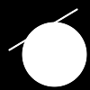
Remember "black" in a mask is transparent, while white is opaque, so all we
need to do is draw black over anything we don't want visible.
Don't forget the "-alpha Off" operation in the above as it is
vital to ensure the grayscale image does not contain unneeded transparent
channel.
And Presto we took a bite out of the original image.
We can also re-add a part of the image we removed. For example here I re-add
part of the 'bite' I removed from the original image, by drawing white area
onto the mask. The mask is then again returned to the original image using CopyOpacity Channel Composition.
convert mask_bite.png -fill white \
-draw "circle 50,70 60,60" \
-draw "roundRectangle 78,5 98,25 5,5" \
-alpha off mask_bite2.png
composite -compose CopyOpacity mask_bite2.png drawn.png drawn_bite2.png
|
Just a word of warning about re-adding parts. Typically ImageMagick replaces
any fully-transparent color with black, usually because that is how the
mathematics behind operators work. It is after all fully-transparent and thus
its color should not normally matter. That means that if we make a part of
the image we haven't drawn before opaque, then it will generally be black,
since that is the color under the image's transparency.
However in the above example you will have noticed that the PNG image file
format correctly preserved the original (made transparent) color of the image.
As such the color of the re-added part remained the original
'SteelBlue' color of the original image. You should not count on
this if the image was saved to some other file format or further modified.
Here is an alternative method of erasing parts out of an image
but rather than extracting and modifying a Grayscale Mask, we instead
use a Shape mask as a sort of 'erase' tool using DstOut Composition Method.
convert -size 100x100 xc:none -draw "circle 40,80 60,60" mask_shape.png
convert drawn.png mask_shape.png -compose DstOut -composite drawn_bite3.png
|
As you can see sometimes Shape Masks are easier to handle, as you avoid the
need to extract and restore the alpha channel.
However the Duff-Porter Alpha Composition
Methods, which is what I am using, will never allow you to restore colors
that have been made transparent. With these methods, anything that has been
made transparent (and thus undefined in color), stays transparent.
In actual fact erasing parts of an image using Alpha Composition Methods will actually
destroy the underlying color of fully-transparent pixels. It will not
preserve it. After all, a transparent color is actually not a real color!
Masks as Colored Shapes
An alternative to just using the mask to add or re-add transparency to an
image is to actually combine the mask directly with images in various ways.
For example suppose we just want to use a mask as a symbol or shape
we want to overlay onto an image in various colors. For this we need
a mask, which I'll extract from a special 'symbol' font.
convert -font WebDings -pointsize 24 label:Y \
+trim +repage -negate heart_mask.gif
| |
![[IM Output]](../images/masking/heart_mask.gif)
|
Note that I negated the label image to make it proper mask image, consisting
of a white foreground (opaque) on black background (transparent).
As of IM v6.4.3-7 the simplest way to convert a grayscale mask, into a colored
shape is to use the Alpha Shape operator, This is
exactly like Alpha Copy, but with an extra step to
color the final shape.
convert heart_mask.gif -background Red -alpha Shape heart_red.png
| |
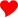
|
|
Note the use of 'PNG' image format for generated shaped image rather than
GIF so as to avoid problems with GIF Boolean
Transparency.
|
Before this the simplest solution was to negate the alpha mask into a matte Channel Image then use Combine to generate the shaped image.
convert heart_mask.gif -negate \
-background Gold -channel A -combine heart_gold.png
| |
|
The color of the shaped mask in this case is defined by the "-background" color which Combine used to fill in the undefined
channels of the new image.
An older but more complicated way is to use 'CopyOpacity' composition method to
set an image's transparency to the given mask, then use Uniformly Color Tinting to color the
resulting shape. This works and for a long time was the best technique to
use, but is no longer recommended.
convert heart_mask.gif \( +clone \) -alpha off \
-compose CopyOpacity -composite \
-fill HotPink -colorize 100% heart_hotpink.png
| |
|
Now that you have a 'shaped' image, you can just simply overlay the image on
any background we want, such as the built-in rose image, using one of the many
Image Layering Techniques and Alpha Composition Methods.
convert rose: -page +2+2 heart_gold.png \
\( +clone -repage +7+29 \) \
\( +clone -repage +52+14 \) \
-flatten rose_with_love.gif
| |
|
This is fine if we want all our symbols the same color, but would require
multiple intermediate images if we want to use multiple colors, making it
impractical for overlaying lots of symbols with lots of different colors.
One way you can make multi-colored overlays is to re-color the shaped image
immediately after reading in the image.
convert rose: \( heart_gold.png -repage +2+2 \) \
\( +clone -fill Red -colorize 100% -repage +7+29 \) \
\( +clone -fill HotPink -colorize 100% -repage +52+14 \) \
-flatten rose_colored_love.gif
| |
|
Note we only read in one shaped image, then recolored a Clone of that image for each new 'layer' to be
overlaid. For more examples of re-coloring a base image, see the whole
section on Color Modifications.
See also Drawing Symbols for an alternative
method of marking specific locations in an image. As well as a Pinning Maps Laying Example for a more
automated layering techniques.
Mathematical Composition
Rather than overlaying the mask onto some background, you may only be
interested in coloring the image with just the white or black parts of the
mask itself. This is relatively straight forward, simply by using some Mathematical Alpha Composition Methods to change
the color of the mask to match a color, tile or other image.
For example the 'Multiply'
compose method will replace the white areas (multiply value of 1) with the
overlay image, while leaving the black areas (multiply value of 0), black.
The 'Screen' operator is
exactly the same as 'Multiply' but with the images negated so it effectively replaces
the black areas of the image.
For example, let's use the larger mask image from above, to overlay a larger
image generated with a tile pattern.
convert mask_bite.png -size 100x100 tile:tile_disks.jpg \
-compose Multiply -composite compose_multiply.png
convert mask_bite.png -size 100x100 tile:tile_water.jpg \
-compose Screen -composite compose_screen.png
|
![[IM Output]](../images/masking/compose_screen.png)
The 'Multiply' alpha
composition method is especially useful for replacing the background of text
images (IE: black text on white background), such as images generated from Postscript Documents.
Masked Alpha Composition
The special three image form of Masked Alpha
Composition allows you use the same mask to directly merge two images
together.
convert -size 100x100 tile:tile_water.jpg tile:tile_disks.jpg \
mask_bite.png -composite compose_masked.png
| |
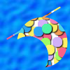
|
The first image will replace the black background parts of the mask, while the
second image replaces the white foreground parts of the mask. The mask itself
is given as the third image.
The mask is used to select and mix two different images together to generate
the final result. It is actually rather like a mapped Blend of the two images.
Remember the final size and meta-data of the resulting image will come from
the first 'background' image of the above operation (black parts), so swap
images and Negate the mask if you want it
the other way around.
And finally remember that if you use the "composite" command instead of "convert", the 'overlay' image (white parts) is given first with
the 'background' image (black parts) second. In other words the first two
images need to be swapped for that command.
Aligning Two Masked Images
 Under Construction
Under Construction

On aligning two masked images...
If your masks are pure boolean, you should have no problems however you
apply them. However masks containing 'anti-aliased', 'gray', or
'semi-transparent' edging to make them 'smooth looking' can be serious
headache if you do not handle them properly and with care.
The rest of this discussion is on 'anti-aliased' masks.
Anti-Aliased Masks which join together come in two styles...
* Ones which fit together like jigsaw puzzle pieces OR
like a shaped peg into a shaped hole (shared boundary)
* Masks that are ment to overlay a solid area (layered)
The latter is easy to handle and is the normal effect you get when you overlay
some colored shape over a fully-opaque image. Essentially you would use
'over' composition to compose the shape.
The former 'jigsaw' masks however is harder. Such masks are not meant to
either overlap, or underlap each other. And yet if you try to join them
using the obvious and normal 'over' composition you will end up with a
semi-transparent join where 'anti-aliased edges' are merged.
Example of a bad 'jigsaw mask' join (over)
The correct way to join masks and shaped 'jigsaw' images is to use
Plus composition to 'add' the images together, with either a
black or fully-transparent background.
Example of a correct 'jigsaw mask' join (plus)
For another example of DIY image joining, using 'Dst-In', 'Dst-Out', and
'Plus' composition, see examples in...
https://legacy.imagemagick.org/Usage/compose/#dstin
I also go though this joining detail in the bug report of 3 image alpha
composition Composite Mask Bug
- Fixed.
For more on the difference between 'over' and 'plus' see 'Blend' (plus) vs 'Dissolve' (over)
Examples of correctly joining edge aligned pieces is shown in
3d Cubes - Affine and again in 3d Boxes - Perspective
and in Isometric Cube using Shears
https://legacy.imagemagick.org/Usage/warping/#sheared_cube
The Major problems in these examples is that the individual parts were NOT
generated using the same mask, but distorted to their final positions.
As such they do not quite fit together properly and joined together.
These examples need to be updated to use a 'Plus' composition method. To
generate improved results, but even then they will still probably not be quite
'right' as the masks do not exactly 'fit' together.
Generating Correct Edge Aligned Masks
The best idea is to use the same mask (negated) for BOTH pieces, rather than
attempting to draw the two masks separately. Otherwise you have the two masks
overlap, OR leave a gap, exactly as you have seen.
Correct methods of mask joining..
* use mask to set transparency on one piece
use negated mask to set transparency of other piece
'Plus' the two pieces together.
* Use mask to Add transparency to just one piece, then
'Over' compose that piece over a complete image.
* use a three image masked composition
see https://legacy.imagemagick.org/Usage/compose/#mask
and https://legacy.imagemagick.org/Usage/masking/#masked_compose
Which uses the mask to select results from two different images.
Remember, 'Over' only needs the 'source' or 'overlay' image masked, the
background image should not have aligned semi-transparent edges.
But a 'plus' composition needs both images masked with and exact negative
mask of each other align the joined edge.
WARNING: Draw does NOT currently allow you to generate two shapes that will
fit together properly without overlap!!!!
See Draw Fill Bounds for details.
I have not checked SVG to see if it has the same problem.
Special Image Masks
Write Masks - Protecting Pixels from Change
A 'write' or 'clip-mask' is a special greyscale image that is added to an
existing image of the size size. It defines areas of the image which are
to be classed a 'immutable' or 'not-writable' by most image processing
operators.
The operator "-mask" takes
an external image to be linked to the images in memory. The 'plus' form of
the operator "+mask"
removes the mask from the image.
For example here I use a 'write mask' to protect the background pixels
from being written to, while rotating the hues, to re-color a the foreground
red rose to a blue rose.
convert rose: -mask rose_bg_mask.png \
-modulate 110,100,33.3 +mask rose_blue.png
|
![[IM Output]](../images/masking/rose_bg_mask.png)
The mask is bit rough, but it worked well. Just remember that a 'write mask'
is used to specify the part to be protected or preserve. Remember, in IMv6...
The "-mask" operator defines a 'write-protect' mask
For more advanced example see Chroma Key
Masking, which is more about generating the mask, rather that applying it
as a write mask.
Write or clip masks are designed to work when the pixels in an image are being
directly modified. EG: negate, level, color tinting, modulate, drawing,
composite, morphology, convolutions.
For operators that generate NEW images (resize, distorts, extent, etc) it will
fail to preserve original pixels, as the mask will not be able to correspond
to the new image size. Such operations will also have the side-effect of
removing or unsetting the images 'write-mask'.
Here is another example...
convert -size 70x70 xc:red red_image.png
convert -size 70x70 xc: -draw 'circle 35,35 30,5' write_mask.png
convert red_image.png -mask write_mask.png \
-fill blue -opaque red +mask masked_color_replace.png
|
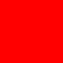
Note that the edges of both the mask and the resulting image is smooth
(anti-aliased) that is because the mask is not simply a boolean mask but
a blending mask.
The 'write-mask' is a blending mask in that 'grey' pixels in the mask will
produce a blending of the new pixels with the old image values, by the amount
of gray that is present. This produces very smooth edges, and also allows you
to generate a gradient across the image between modified and un-modified
areas.
However a blending mask while suitable for a single operation, may not be good
when used for multiple operations as its blending effect will then be applied
multiple times. This problem is especially prevalent in a looped operation
such as morphology. But only if you use a non-boolean blending mask.
If this is a problem, it will probably be better to simply do all the
operations against a copy of the image, then use Masked Alpha Composition against the original image.
Caution is advised.
This use of masking is actually exactly how Composition Masking actually works! But only for the duration of the
composition operator being applied.
convert -size 70x70 xc:green green_image.png
convert red_image.png green_image.png write_mask.png \
-composite masked_composite.png
|
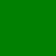
Is equivalent (with a negated mask) to...
convert write_mask.png -negate -write MPR:mask +delete \
red_image.png -mask MPR:mask \
green_image.png -composite +mask masked_composite_equiv.png
| |
|
That is the mask is negated, then applied to the first 'destination' image.
the second is then composed over the first image, modifying only the 'white'
areas of the original mask image.
A three image "-composite" operation uses
a 'write' mask
In morphology write masks are typically used to generate a Conditional or Constrained Morphology
form of an operation. One such example was discussed in the IM Discussion
forum, Cleaning up noise around
text, to limit the effects of a dilation.
NOTE: -crop should be able to preserve the image mask of individual
images, by also cropping the mask and assigning to the new images. This
however is currently not done.
Clip Mask and Clip Paths
The "-clip-mask" form
of this operator, is almost exactly the same as the above but only provides
a boolean (all-or-nothing) style of masking. As a result you cannot achieve
a 'blended' or smoothed result.
For example...
convert red_image.png -clip-mask write_mask.png \
-fill blue -opaque red +clip-mask clipped_modulate.png
| |
|
As you can see the result is highly aliased (with stair-cased edges), as
a "-clip-mask" does
not produce a blended result as "-mask" does.
The only good thing about this is that it is slightly faster (though not very
much). It was provided originally to allow the handling of Clip Paths in TIFF image files, and is a very old
operator (IMv5). The newer "-mask" operator should be used instead.
|
In IMv6, a 'write-mask' and 'clip-mask' are implemented side-by-side, even
though they technically do exactly the same function. As such you could
apply both masks simultaneously.
However using both at the same time is not recommended, and results are not
defined. Also this 'boolean mask' form has been removed from IMv7.
|
Clip Paths for TIFF images
A 'clip path' is part of TIFF image file format, and defines a vector path
that is used define a 'shaped area' within the TIFF image.
In IM the operators "-clip" and "-clip-path", reads this 'clip-path' and converts it into a Clip mask (above). As such it defines a 'write mask'
that will protect the shape from modification.
A clip-path stored in the TIFF image is defined as a SVG Path Drawing, which you can extract from a TIFF image file format
using...
identify -format '%[8BIM:1999,2998:#1]' image_clip.tiff
|
The biggest problem people often have is making everything that is not clipped
transparent. Which requires you to write the areas the mask write protects!
This is one solution, which converts the whole image to transparency, then
turn on the 'clip path' then make the now writable parts opaque (visible)
again.
convert input.tiff -alpha transparent -clip -alpha opaque -strip out.tiff
|
The "+clip" operator also
turns off and remove the clip mask (just as "+clip_mask" does). However no
file format saves the current clip mask with the image for any image file
format. (At least in IMv6)
Read Masks - Ignore Pixel Input
It is important to note that a write mask will limit what pixels will be
written to an image. It does not however limit what pixels are being 'read'
as part of the operation being performed, to create the new pixel data being
written.
This basically means that if you use a 'area effect' or 'neighbourhood' type
of operator, such as Blurs, Morphology, or Convolution, then 'writable
pixels' close to the edge may include color values from the masked, or
un-writable area.
For instance, here we write protect the foreground rose, before blurring the
image. That is we want to only blur the background part of the image, rather
heavily in this case.
convert rose: -mask rose_fg_mask.png \
-blur 0x8 +mask rose_bg_blur_fail.png
|
The result is using a Write-Protect Mask and is not what was wanted.
As you can see even though the foreground colors were protected by the mask,
the colors were still used as part of blurring the background around the rose.
Because of this the blurred background close to the foreground has a distinct
reddish tint or halo. Put in another way the foreground colors 'leaked' into
the surrounding background. This is generally not what people intend doing
when they want to blur the background of an image, such as part of a lens
focus effect.
What people really want is to get blur to completely 'ignore' the foreground
pixels, and only allow the colors of the background to part of the blurring
process. That is they wanted to prevent blur from 'reading' the foreground
pixels.
Read Mask Solution for IMv6
In IMv6 the only way to make a pixel color pixel unreadable, is to make the
pixel transparent. Transparent pixels have no color by definition, and as
such the 'hidden color' is not part of the calculations made by the blur
operation.
This gives us a 'cheat'. Make foreground pixels transparent, apply the blur
(or other) operation, and turn off transparency (it isn't really wanted in
this case). Then we can restore the foreground part of the image.
If that sounds complex, it is. Here are the steps involved, while showing
intermediate images to try and make the technique clear...
convert rose: rose_bg_mask.png -alpha off \
-compose CopyOpacity -composite +compose rose_bg_only.png
convert rose_bg_only.png -channel RGBA -blur 0x8 rose_bg_blurred.png
convert rose_bg_blurred.png -alpha off rose_bg_blur_opaque.png
convert rose_bg_blur_opaque.png \
rose: rose_fg_mask.png -composite rose_bg_blur_good.png
|
 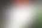
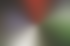
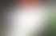
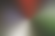
The result is the removal of the red halo effect that was previously being
'leaked' into the blurred background. Here is a side-by-side comparison of
the write masked and read masked versions of the background blur, so you can
clearly see how we removed the 'leakage' of the foreground color into the
background.
Write |
Read |
|
Masking Method Differences
|
The above example assumes that original image has no alpha. If an image also
contains an alpha channel, then you need to separate and process alpha
separately, creating double the effort. One example of this is shown in
a 'distort resize' discussion, which wanted to ignore the virtual pixels
that surround the image being resize using distort. See Correct Resize (using distorts) for
detail.
Note that the above is also very closely related to a blurred Hole Filling technique. The only difference is that
it is the background that is being preserved from modification, not the
foreground. Which makes it a little simpler.
True 'read masks' should be available IMv7 to make the above simply adding
both a 'read mask' and optionally a 'write mask'.
Regions and Region Sub-Images
Regions are another way of limiting the effects of operations to a smaller
area of an image.
For example here I color tint the whole rectangular region red...
convert koala.gif -region 40x33+15+5 -fill red -colorize 50% \
koala_region_red.gif
| |
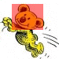
|
You can also make a region transparent...
convert koala.gif -alpha set \
-region 40x33+15+5 -alpha transparent koala_region_trans.gif
| |
![[IM Output]](../images/masking/koala_region_trans.gif)
|
Note that I needed to ensure the original image has an alpha channel enabled
before making the 'region image' transparent. If that was not done, IM would
make any transparency in the 'region image', see-thru, and you would see no
change. See How Regions Work below for
details.
|
Before IM v6.6.9-5 transparency preservation was broken, and the results
of transparency in a region was always "see-thru to original". As such the
result of the above would not include any transparent pixels, even though the
image allowed the use of transparency.
|
The biggest reasons for using Regions is that it
doesn't just simply limit its effect to a small area, it actually extracts
that rectangular area of the image, and applies all the Simple Operations that follow to that
smaller area.
This means that if your are only modifying one very small area of a very large
image, say for example doing red-eye removal, then you not only limit the
scope of the operations to that area, but perform it much faster too,
and the extracted region image is itself smaller.
In summary... A Write Mask will perform operations
over the whole image, but limit what pixels are actually changed, But Regions use a smaller extracted sub-image.
Note that there is nothing preventing you from using both of these methods
together. Though if you apply a clipping mask to a region, the clipping mask
should match the size of the region image that was extracted.
Warping a Local Region
As a 'image region' actually extracts a 'small sub-image' of the original for
processing, you can make use of the special 'localised' Circular Distortions to warp small regions of
the original image.
For example here we have a line of stripes.
convert -size 600x70 xc:darkred \
-fill white -draw 'roundrectangle 5,5 595,65 5,5' \
-fill black -draw 'rectangle 5,25 595,31' \
-fill red -draw 'rectangle 5,39 595,45' \
lines.gif
|
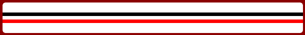
Now by defining regions we can distort the line in different ways in different
areas.
convert lines.gif \
-region 90x70+10+0 -swirl 400 \
-region 90x70+100+0 -swirl 400 \
-region 90x70+190+0 -swirl -400 \
-region 120x70+280+0 -implode 1.5 \
-region 100x70+380+0 -implode -7 \
-region 101x70+480+0 -wave 10x50 -crop 0x70+0+10\! \
+region lines_regions.gif
|
Note that the "-implode" and "-swirl", fit into the use of regions very well, as they have
the property that the outside edge of the distorted image matches up to the
rest of the image outside the defined region. That is they are actually
designed to perform 'localized image warping'.
Note that when I used the Wave Distortion, I had to crop
the size of the resulting 'wave' image so that it would again fit into the
original area from which it was extracted.
Remember Regions only work when used with Simple Image Processing Operators. Any
other operator including another "-region" operator will cancel the region processing, before
that operation is applied.
How Regions Work, and its Problems
In reality the way regions work is...
- Extract from the image a smaller image according to the "
-region" operator,
using a simple crop with the region argument.
- Apply any Simple Image Processing Operators, that follow, to the smaller image.
- When a non-Simple Image Operator is seen, OR another "
-region" operator is
found, OR the region is turned off using "+region", then the
extracted region is overlaid on the original image at its extracted
location.
Region works in a way that is similar to using Image Stack Operators, though it
existed in ImageMagick a long time before those operators. It was for example
an integral part of IM version 5.
For example, if you have this Region Operation...
... -region WxH+X+Y ...simple-operators... +region ...
|
the result is equivalent to this (for a single image)...
... \( +clone -crop WxH+X+Y ...simple-operators... \
\) -geometry +X+Y -composite ...
|
Or this (for multiple images)...
... \( -clone 0--1 -crop WxH+X+Y ...simple-operators... \
null: +insert \) -geometry +X+Y -layer composite ...
|
How the 'region image' is actually overlaid onto the 'original image' is
a little tricky...
If the original image has the no Transparency Channel
enabled, the 'region image' is composed using Over
Composition. That means that transparent areas in the region image will
become see-thru, allowing you to see the original image behind it.
For example here I purposefully turned off the transparency in the original
image, but then Rotate the region so as to
produce some areas of transparency in the corners.
convert koala.gif -alpha off -region 30x30+10+10 \
-alpha on -background None -rotate 30 koala_region_rotate_1.gif
| |
|
As you can see the corners of the rotated area (which was transparent in the
'region image') shows the 'original image'. Basically as the original image
cannot handle transparency, the region image is simply overlaid, with
see-thru corners.
If the original image does contain active Transparency
then the transparency in the modified region image can also be modified, so
transparency is just 'copied' as is.
convert koala.gif -alpha set -region 30x30+10+10 \
-background None -rotate 30 koala_region_rotate_2.gif
| |
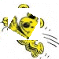
|
As you can see IM uses a Copy Composition, so
that any transparency that exists in the region image, will also be copied to
the original image.
If for some reason you want the original image to preserve its original
transparency, Turn off the Alpha first, then after
the region image has been restored, Turn it on again
so as to restore it.
Region Images which are enlarged or shrunk, may not 'fit' back into the
original. For example here I resize (and color) the region image so it
becomes smaller...
convert koala.gif -region 30x30+10+10 \
-resize 75% -fill red -colorize 30% koala_region_shrink.gif
| |
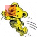
|
As you can see the original region was not covered by the region image that
was restored. As such those parts not covered were not replaced.
In a similar way, if the region becomes larger, more of the original image may
become covered by the overlaid region image.
convert koala.gif -region 30x30+10+10 \
-resize 150% -fill red -colorize 30% koala_region_enlarge.gif
| |
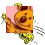
|
In both cases the top-left offset of the region, does not move. You cannot
just shrink an region image and center it within the region area, nor can you
position the region image in another position.
Caution should be exercised to prevent region images from changing size.
Though in some special circumstances you can still handle a resized region.
For an example of this look at the 'wave distortion' example above.
|
Like "mogrify" you cannot
merge multiple sub-images as that requires the use of a non-simple image
operation. However you can use "-draw" as an alternative composition method. See Alpha Composition in Mogrify for an
example.
|
|
At the time of writing, the 'region image' still contains the Crop Virtual Canvas Offset from its extraction
from the original image. This may, or may not be regarded as a bug,
depending on if you find this information useful or not. The offset is
currently not used when a region image is restored.
If the offset is not wanted (as it interferes with an operator such as Distort), follow the "-region" option by a "+repage" operator to remove the
offset, from the region images. Its removal or modification will not effect
its restoration back onto the original image.
|
Background Removal
One of the most common problems in image processing is mask generating from a
existing fully-opaque image. Such images are commonly downloaded from the
World Wide Web, or generated by programs, or in image formats that don't
provide any form of transparency.
It may also be that you have a photo of some object, and want to remove the
background. Remember photos do not have any understanding of transparency,
so you need to remove the unwanted parts yourself.
Unfortunately there is no general solution to this problem, especially when
you also want to retain any semi-transparent edging to the image.
Consequentially their are hundreds of ways and variations on doing this task,
all dependant on the exact situation.
Closely related to image masking is transparency adjustments to match a
background that an image is going to be overlaid on. This is talked about in
detail as part of saving to the GIF Image File
Format which only allows Boolean transparency.
Masking Simple Backgrounds (floodfill)
When an images background is a simple single solid color, you can often
generate simple masks (and background removal) by just doing Replacing Colors in Images.
For example here is a direct floodfill masking of an image with a solid color
background.
convert cyclops.png -alpha set -channel RGBA \
-fuzz 1% -fill none -floodfill +0+0 white \
cyclops_flood_1.png
| |
|
Well that did not work, as the floodfill 'seed' point in the top-right corner
does not actually reach all parts of the image!!!
The solution to this is to enlarge the image slightly, so as to provide a path
for the floodfill to reach all the outside edges of the image. However for
this you need to know the color of the background.
convert cyclops.png -bordercolor white -border 1x1 \
-alpha set -channel RGBA -fuzz 1% \
-fill none -floodfill +0+0 white \
-shave 1x1 cyclops_flood_2.png
| |
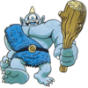
|
Of course we did not specify a very good Fuzz
Factor. The problem with this is that you get a halo around the object
within the image. This is because most images contain special pixels along
the edges which smooths the look of the image.
However as this image has a good black border to it, relative to the
background, using a nice large fuzz setting can be used to nicely separate the
image from the background.
convert cyclops.png -bordercolor white -border 1x1 \
-alpha set -channel RGBA -fuzz 20% \
-fill none -floodfill +0+0 white \
-shave 1x1 cyclops_flood_3.png
| |
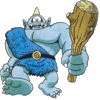
|
This technique has some problems with it. First it is an all or nothing
masking of the image, producing edges that are aliased, staircase-like and
often horrible looking. This is fine for the limited GIF image file format,
but not very good if you plan to overlay that image onto another background.
It is also very very difficult to get every anti-aliasing edge pixel. As such
if I overlay the above image on a black background, you may see some pixels
that are much whiter that normal.
convert cyclops_flood_3.png -background black -flatten \
cyclops_flood_3_over.png
| |
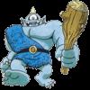
|
Also if you do manage to use a high enough fuzz factor, you are likely to have
the problem of having very little edging pixels left, or 'leaking' into the
center of the image.
Finally a direct flood fill like this does not work for a background that isn't
a simple single solid color.
Cutting Out Bordered Objects
Images with an existing single color border has a distinct advantage for these
methods of background removal, as the border provides a definite boundary
between what is 'inside' and what is 'outside' the image, and that in turn
allows use a better method of specifying the boundary of the background image.
That is rather than specifying what colors should be regarded as background,
we can instead specify what colors mark the border of the object being masked.
Further more, as the border color is known, only two specific colors will have
been mixed together around the edges of the image. That is both colors are
known, and so exactly how transparent the edges should be is also very well
known.
Under Construction
Removing a Known Background
While removal of a simple background to a 'Boolean' mask, is relatively
straight forward, things get more complicated when the background is not so
simple. However if the background itself is known. you can use that to help
in its removal from other images.
As of IM v6.3.4 a special Alpha Composition
method was added called 'ChangeMask' which allows for the direct removal of a known
background from an image.
For example here we have an unaltered background image, and one that has been
overlaid by a GIF image with a simple Boolean (straight on/off) transparency.
By using 'ChangeMask' we can
recover that original overlaid image (if it is very different to the
background).
convert overlay_figure.gif overlay_bgnd.gif \
-compose ChangeMask -composite overlay_removed.png
|
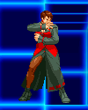
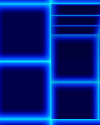
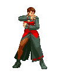
Basically what this does is determine how 'different' the pixels are from one
image to the other, and is the difference is less than the current Fuzz Factor, then make that pixel
transparent.
Only fully transparent pixels are added to the image, otherwise the original
image is left as is, transparency and all.
We can simulate the operator by using the older 'Difference' composition method
to generate a Comparison Difference
Image...
composite overlay_figure.gif overlay_bgnd.gif \
-compose Difference overlay_difference.png
|
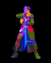
As you can see the difference image is black for all the unchanged parts
and a mix of colors for the parts which has changed.
By separating and adding the individual color channels together and
thresholding we get a mask of any difference in any channel between the two
images.
convert overlay_difference.png -channel RGB -separate +channel \
-evaluate-sequence add -threshold 0 overlay_mask.png
| |
|
Using this mask we can set anything that has not changed to transparency.
convert overlay_figure.gif overlay_mask.png \
-alpha off -compose CopyOpacity -composite \
overlay_removed.png
| |
|
As you can see the 'ChangeMask' composition method makes this process a lot easier.
However this only presents a 'on/off' style of background masking. It does
not allow for fuzzy or anti-aliased edges, or transparent feathering of the
result.
Difference Image Masking and Feathering
The above can be taken further to images that have aliased edges. as well as
non-simple backgrounds.
For example, Here we have a 'Cyclops' on a white background, which we want to
extract. We then generate gray-scale image of the differences between this
image and the background color (as defined by top-left most pixel).
convert cyclops.png \( +clone -fx 'p{0,0}' \) \
-compose Difference -composite \
-modulate 100,0 -alpha off difference.png
| |
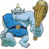
|
Of course this difference image is no good as a mask directly. If you did use
it you will effectively make most of your image semi-transparent, instead of
just the surrounding background.
However from this difference image, huge number of different transparency
masks can be created, depending on exactly what you are trying to achieve.
We can adjust the above difference image to produce a mask of all pixels that
are even the smallest amount different from the background color.
convert difference.png -threshold 0 boolean_mask.png
convert cyclops.png boolean_mask.png \
-alpha off -compose CopyOpacity -composite \
cyclops_boolean.png
| |
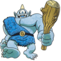
|
As you can see a boolean 'any difference' resulted in a good amount of the
original background being included. This is because the original image is
either 'anti-aliased' or blurred slightly with the background (in this case it
was caused by the original image being resized from a JPEG format image).
This would not be a problem if the original image was itself a Boolean overlay
(EG a GIF format image, overlaid on a background). In that case your result
will be perfect (see the 'ChangeMask' example above).
By varying the "-threshold" you can add a 'fuzz factor' to the boolean (on/off
only) mask, so as to get the mask closer to the image proper.
convert difference.png -threshold 15% threshold_mask.png
convert cyclops.png threshold_mask.png \
-alpha Off -compose CopyOpacity -composite \
cyclops_threshold.png
| |
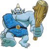
|
Notice that the eye of the cyclops image is now also regarded as being a
transparent hole!
This 'hole' highlights the biggest drawback with this whole technique. Parts
of the image object which are close to the background color, or worse still,
exactly matches the background, will be thought of as being the same as the
background.
Of course this may be desirable in images of 'holey' object, such as a donut,
but for our cyclops, a 'holey eye' is definitely a mistake.
The original 'halo' effect can also be desirable for some things like text to
make it more readable when you want to overlay it again on some other 'noisy'
background.
You can enhance the halo effect by blurring the mask a little before applying
it, so that the resulting 'halo' becomes diminished by distance.
convert difference.png -bordercolor black -border 5 \
-threshold 10% -blur 0x3 halo_mask.png
convert cyclops.png -bordercolor white -border 5 halo_mask.png \
-alpha Off -compose CopyOpacity -composite cyclops_halo.png
| |
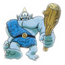
|
The resulting 'halo' effect can be further modified by using more Histogram Adjustments on the mask image,
giving you very precise control of the results for specific images. With the
right parameters you can adjust the surrounding halo until it is practically
non-existent, though eliminating it completely in this way is difficult. See
next section for an improved technique.
A small amount of blurring (say "-blur 0x0.707" or square rot of
2) is actually recommended when generating threshold masking, just to smooth
out the edging of the mask. Of course the result will not be boolean, so don't
try to save it to a GIF format image file.
This is also an example of Blur Feathering.
But be warned that it is not quite the same as true Feathering Shapes using Distance.
However when dealing with 'bitmap' or 'threshold masks' such as we created
above, a small amount of blur feathering, followed by a larger amount of
distance feathering, will probably result in the best overall result.
Recovering Semi-Transparent Edges
The Difference Masking technique that we used above
can be used with the previous FloodFill Masking
technique to solve most of the problems we have seen with simpler masking
techniques.
Here we look at a multi-layered masking technique, but one that should produce
near ideal removal of the images background, while preserving the anti-alias
shading pixels along the edge.
However this is limited to images on a known background, and having a good
contrasting 'edge' to the foreground pixels.
For this example I decided to use something that was very hard to separate,
but which showed a LOT more shaded pixels around the edges than you would
typically have for anti-aliasing purposes. A shape with a shadow effect.
convert -size 70x60 xc:none -font Candice -pointsize 50 -stroke black \
-fill black -annotate +12+42 'A' -channel RGBA -blur 0x3 \
-fill tile_disks.jpg -annotate +10+40 'A' \
tile_water.jpg -compose DstOver -composite letter.png
| |
|
First we will need to generate a difference image, and lucky for us we do know
what the background image is. Of course it will work just as well for a plain
colored background too, as long as their is a good contrast to let use
generate two masks.
Basically by using a difference image we can remove any influence of the
background image, and from that generate the masks we will be using.
convert letter.png tile_water.jpg \
-compose Difference -composite \
-modulate 100,0 -channel B -evaluate set 0 \
-alpha Off diff_mask.png
| |
|
Note that this time I processed the grayscale difference image slightly,
limiting it to red and green channels, while clearing out the blue channel,
producing a black-yellow difference image. This is tricky as it frees 'blue'
channel to allow the generation of a clean floodfill mask, separate to the
difference image itself.
Technically I could clear the green channel as well so I can use it for the
second mask. But lets not get ahead of ourselves.
Now we need two masks: an outside mask, defining of all areas that will
definitely be transparent; and a mask which defines the inside of the object in
the image, without generating any unwanted 'holes'.
So lets flood fill the image from the outside inward, using a number of
different fuzz factors, so we can pick the two inside and outside masks we will use.
for fuzz in 01 03 06 28 32 34; do \
convert diff_mask.png -fill blue -fuzz $fuzz% \
-bordercolor black -border 1x1 -floodfill +0+0 black \
-shave 1x1 diff_mask_$fuzz.png; \
done
|
The blue areas in the above images is the area being masked. Remember we
cleared the blue channel for this purpose.
The first mask should mask the areas of the image we definitely want to make
full-transparent. That is the parts we definitely expect to be fully
transparent on the final image. The area inside the mask should still contain
most of the black halo shadow of the image.
In this case we have a lot of interaction between the image proper and the
rest of the background so I chose a Fuzz
Factor of '1%' which still contained a large area surrounding
the image. In a more typical non-shadowed case this area can be even smaller,
down to a non-percentile value such as 5 or 10.
The second mask should have large enough 'fuzz' so as to eat up all the
semi-transparent pixels that is present. That is right up to and preferably
actually into border of the image without completely removing the border, or
'leaking' into the image proper (see last image above). The negative of this
mask will actually represent all the pixels that will be fully-opaque (and
thus represent the inside) in the final image.
This selection can be difficult and may require a lot of trial and error to
figure out the best value to use. For this image a very high fuzz
'32%' was able to be chosen without any major problems.
Basically you want to try and get it high enough that the final image will not
contain any of the original 'background' pixels in it, but without the mask
eating away (or leaking into) the inside the image. It may even require
a little hand editing to get the mask just right when you have a gap in the
surrounding 'edge' color.
We can now use this mask to extract the 'core' or inside of our image. That is
the parts we are sure does not contain any semi-transparency through to the
background pattern we are removing.
convert diff_mask_32.png -channel blue -separate +channel -negate \
letter.png +swap -alpha Off -compose CopyOpacity -composite \
letter_inside.png
| |
|
Note how I extracted the blue mask from the flood-filled masked images.
Also due to the all-or-nothing nature of flood-filling, the mask will show
heavy stair-casing or alias effects around the edges. This is the problem the
second mask will allow us to fix.
Remember this image is only of the pixels that we know does not interact with
the original background, and will be left as is, in the final image. It does
not include any of the shadow effects, and anti-aliasing pixels that I am
specifically attempting to recover. Recovering those pixels is where the real
work lies.
By negating and subtracting (multiplying) the masks we can generate a new mask
which defines the area where we want to extract semi-transparent edging or
shadowing pixels...
convert diff_mask_01.png -negate diff_mask_32.png \
-channel blue -separate +channel -compose multiply -composite \
mask_aliasing_area.png
| |
|
This area is then used to extract the anti-aliasing pixels from the difference
mask, which defines how transparent the pixels should be. We normalize those
pixels to get a smooth transition from opaque to transparency.
convert diff_mask.png -channel red -separate +channel \
mask_aliasing_area.png -alpha Off -compose CopyOpacity -composite \
-background gray30 -compose Over -flatten -normalize \
mask_antialiased_pixels.png
| |
|
The lighter the color in the above mask, the more opaque the pixel will be.
Similarly the darker the color, the more transparency it will be.
Note that I used a gray background here to ensure that the transparent colors
that is present in the image will not interfere with the Normalization of the image. Without this
this normalization will fail. The flat gray color itself is not important as
they are outside the mask area, so will be ignored later.
Now that we have the right transparency level, we need to know what color
should be used for these semi-transparent pixels. This color will usually be
the same as the edge color of the image, in this case simply, black. However
because of the interaction of the original background I decided to go for a
dark grey color for the shadow
|
You will need to somehow figure out what color the semi-transparent pixels
should be, so you can set the correct color for the anti-aliasing pixels.
This could be
- A fixed edge color (EG: near-black, as in this example)
- Use the color of nearest fully-opaque edge pixels (using
morphology. See Sparse Color as
a Fill Operator
- Calculated: Once you know th alpha and the background color,
you can subtract the background color to correct the pixel color.
See Background Removal using Two
Backgrounds below.
Basically it depends on your image.
|
While we are at it lets also re-mask the image to leave just these special
edging pixels.
convert mask_antialiased_pixels.png mask_aliasing_area.png \
-compose multiply -composite -negate \
-background '#444' -channel A -combine letter_edging.png
| |
|
All that is needed is to now layer the inside 'core' of the image with the
semi-transparent edging pixels.
convert letter_inside.png letter_edging.png \
-background none -flatten letter_recovered.png
| |
|
And hey presto, we have an image with the background removed to produce a
perfect anti-aliased image, with correctly recovered semi-transparent edging
and shadowing
You can even overlay it onto a completely different background.
convert letter_recovered.png tile_aqua.jpg \
-background none -compose DstOver -flatten letter_on_aqua.png
| |
|
The image I used for this example is very difficult with a large 'edge'
region. Most images are not nearly so bad, but this method is probably the
best and most universal background removal technique.
This has now been placed into a shell script called "bg_removal", which uses a single
command, no temporary files, and has a number of extra options on the methods
by which the masking is performed.
Background Removal using Two Backgrounds
The major problem with the previous techniques is that you really do not have
enough information to completely recover all the information about the
foreground object.
You really need to recover two pieces of information, how transparent each
pixel in the foreground object is, and what is its original color. And you can
not perfectly recover both pieces of information from just one image.
Even when you know exactly what the background image looks like, you cannot
just subtract it from the foreground object, unless the two are very different
and known colors.
The problem is you simply cannot be sure if the color that is visible is
really the color given (opaque), or it is some blending of some other color
and the background (semi-transparent). You cannot separate the original color
from the alpha value needed, unless you have a source of some extra
information.
The one situation in which you can completely recover all the details of
a foreground object, is when you have two images containing two very different
but completely known background colors. In that situation you do have
enough information to recover both the color and its transparency of the
foreground object, for a perfect background removal.
The important factor in selecting two images, is that the background colors
are as different as possible over the whole image. That is the colors are not
only color complementary, but negative in intensity in all channels.
For example...
While a different background color is used, both images contain exactly the
same object. The object shown is not simple, but contains lots of
semi-transparent colors. You can see this in the way the dark blue background
is visible in the flames of the image, though this transparency is all but
invisible in the lighter yellow background.
By using two colors, the semi-transparent pixels of the overlaid object will
become mixed with two very different colors, as a result be slightly different
colors in the two images. By measuring how different each pixel is, you can
determine exactly what pixels are semi-transparent, and by how much.
Essentially there is enough information to allow you to perfectly recover the
transparency of the overlaid object.
Recovery the transparency or 'mask' is of course the first step, and is
actually a very straight forward step. Generate a difference image, then merge
and maximize the differences found in each channel.
convert match_navy.gif match_gold.gif \
-compose difference -composite -separate \
-evaluate-sequence max -auto-level -negate \
match_alpha.png
| |
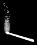
|
This resulting image is a perfect map of how transparent each pixel is. It is
essentially the 'alpha mask' of the original object in the source images.
However it will only work if the overlay image contains both areas of
full-transparency, and full-opacity. If that is not the case instead of the
normalization step ("-evaluate-sequence max -auto-level") in the
above , you will need to divide each channel by the difference of the two
background colors. That is divide by a value between 0.0 and 1.0, the larger
the difference the better. If the two background colors is pure black and
pure white, then no normalization, is needed, just the difference of the two
images.
The difference is then Negated so tha
a maximum difference produces zero alpha or full-transparency, and no
difference produces maximum alpha or full opacity.
The next task is harder, as the colors of each semi-transparent pixel is
modified by the background, you cannot just use the alpha mask to extract the
object from one of the source images. For example...
convert match_navy.gif match_alpha.png \
-alpha Off -compose Copy_Opacity -composite \
match_bad_colors.png
| |
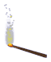
|
Basically what we got was a horrible halo of the background color in the
semi-transparent 'flame' of the image. Not a nice result at all. This is
known as 'color spill' (a term from Chroma Key Masking, also
known as the Blue or Green Screen technique) and this can be a major problem.
What we need to do is remove the background color from the semi-transparent
pixels. However as we have already recovered the original images alpha
channel, we know exactly how much color needs to be removed from each pixel,
so as to restore the original color overlaid.
To do this we not only need one of the source images, and the alpha channel we
just extracted, but we also need to know the exact color of the background,
in that source image. A relative easy problem when using a solid color
background, as in these examples.
For example here I restore the original colors...
convert match_navy.gif match_alpha.png -alpha Off \
-fx "v==0 ? 0 : u/v - u.p{0,0}/v + u.p{0,0}" \
match_alpha.png -compose Copy_Opacity -composite \
match_recovered.png
| |
|
I used top-left corner pixel (FX formula 'u.p{0,0}') in the
source image as the background color to remove from semi-transparent pixels.
Adjust this or directly substitute the color to remove if needed.
The key to the color restoration, is the complex FX blended subtraction operation in the above. This will enhance the
original color ('u') of the source image according to the alpha
mask ('v'), then subtract the background color
(u.p{0,0} or the top-left corner pixel) from the final result.
The formula is not straight forward, and major thanks does to HugoRune, in the IM Forum discussion Undo a Composite -dissolve for
determining the mathematics needed. The discussion also goes on to exactly how
all the steps work, were derived, and even how you can also extract the
overlay from any two known but different background patterns.
Here is the whole sequence all in one command.
convert match_gold.gif match_navy.gif -alpha off \
\( -clone 0,1 -compose difference -composite \
-separate -evaluate-sequence max -auto-level -negate \) \
\( -clone 0,2 -fx "v==0?0:u/v-u.p{0,0}/v+u.p{0,0}" \) \
-delete 0,1 +swap -compose Copy_Opacity -composite \
match_recovered_2.png
| |
|
|
In IM v6.6.8-3, if FX references a transparent pixel using 'p{}' it gets
zero values rather than the actual fully-transparent color values!
This is a bug and was reported and fixed in IM v6.6.8-5. It is not known
when the bug was introduced.
This was only a problem, if you decide to merge the alpha image into the
source image first, then try to fix semi-transparent or 'spill' colors,
using the known background color.
|
This time the 'gold' background image was used for the color extraction, and
was selected by the '0' in the second "-clone" operation, but either
source image could have been used.
Just one warning. The above assumes the top-left pixel is the unadulterated
background color. If it isn't you may have to modify the command to specify
a specific pixel color, or use a third image that does contain the correct
background color information. The latter method is vital if the background
color is not constant across the image, though even that complication can be
fixed.
Here is the simpler sequence for images overlaid on a pure black and a pure
white background color. In this case the colors are always recovered from the
black background image, as it is just a simple division, and thus a faster Divide Composition can be used instead of the
painfully slow FX DIY Operator.
convert match_black.gif match_white.gif -alpha off \
\( -clone 0,1 -compose difference -composite -negate \) \
\( -clone 0,2 +swap -compose divide -composite \) \
-delete 0,1 +swap -compose Copy_Opacity -composite \
match_recovered_3.png
|
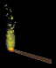
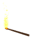
Studio photos for background recovery
The ideal backgrounds are a matte (non-reflective) black, and simple pure
(non-reflective) white. The background should also be as smooth and unvarying
shade as possible. For making photos specifically for background removal,
using two complementary colors may work better. Say taking photos with a green
and magenta backdrop.
Basically you will need to some how replace the background color screen before
taking the second photo. Note that order of the two photos does not matter in
the background removal, but they should be a clean and uniform as possible,
and the primary object and camera must remain perfectly steady and fixed.
A better method may be to simply place a white screen well distanced behind
the object and uniformly light that screen using two different colored lamps
so as not produce any shadows from the object. With this technique you can
switch to the other background color, without needing any physical change in
the studio to take two photos with two different backgrounds.
These two color background techniques should work well for transparent
objects, but reflections, and or background warping or 'lens' effects by the
object being photographed will not be recorded by the technique, only its
transparency. On the other hand reflections of a constant light source on the
object will be preserved!
If you try this please let us know, and give an example of your source
photos and results for inclusion here. You will be named with a pointer to
your site for people to look at.
Video background recovery
If you have a large enough series of images with many different but complex
backgrounds (such as a video), you can try taking a minimum and maximum value
of all the images to generate a near pure black and white background image for
use. The more images, the better this works.
With those two images any constant logo and its semi-transparency can be
extracted, and the same technique can then be used to remove it from all the
frames.
However it will only work for a constant semi-transparent overlay, and may not
work for logos that use color or hue distortions, or even a solid color logo.
But it will will at least let you determine the exact logo shape.
For logos that are fully opaque or more difficult, hole filling (see next) can
then be used to fill in missing detail from surrounding colors.
See the IM Forum Discussion for more
details.
Hole Filling
While masking, adding transparency, and removing background provide one way of
dealing with unwanted elements, often a 'hole' is not what you actually want
as a result. Sure you can just overlay images with holes over other images to
fill them, but that may not provide a seamless result.
To erase elements from an image, you don't just want to cut them out, but
replace them with colors, shades, and textures of parts that surround the
hole. The following are various techniques for determining what to use
to fill-in that hole.
Creating a hole to fill
Suppose we have an image with some ugly text...
convert zelda_tn.gif -gravity Southwest -annotate +8+20 Zelda zelda_text.jpg
|
Well what we really want to do is remove that text, and the simplest way is
to mask it, so as to leave a 'hole' where the text was. This simplifies the
problem, as it no longer matters what was removed. We just have a hole to be
filled.
|
![[IM Output]](../images/masking/zelda_text.jpg)
|
For this case however I'll create a mask using a drawn line that covers the
'ugly text', as if an user had quickly used an image editor.
convert -size 120x90 xc:black -stroke white -strokewidth 7 \
-draw 'stroke-linecap round line 9,62 36,63' \
-threshold 10% zelda_text_mask.gif
| |
|
Just the creating of the 'hole' itself can be a tricky matter, and an
automated solution may depend on exactly what you are trying to remove, or
even involve comparing hundreds of images with the same 'text' or 'logo' to
locate it exactly.
Note that a smaller the hole is the better the final result. The more
information that can be preserved from the original image, the better the
result will be. A rough oddly shaped hole is also better than a very smoothly
outlined hole. So taking your time to make the smallest hole that removes all
unwanted effects, can make a big difference.
Now lets use the mask to cut a hole out of the image, which will also check
that it covers all the unwanted parts.
convert zelda_text.jpg \( zelda_text_mask.gif -negate \) \
-compose CopyOpacity -composite zelda_text_hole.png
|
So here we have an image with a 'hole' in it that needs to be filled.
|
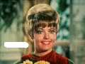
|
Blurred Fill
So we have a hole, that needs to be fill with some color. Something that will
not look like we have actually removed somethign from the image.
One of the simplest methods is to simply blur the image, allowing the colors
around the hole to 'spread' into the hole, and then remove the transparency.
convert zelda_text_hole.png -blur 0x1 -alpha off zelda_text_fill.png
|
The amount of blur you use depends on the size of the hole used.
|
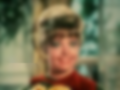
|
Now how we can underlay this blurred image
to 'fill the hole' that we previously made...
convert zelda_text_hole.png zelda_text_fill.png \
-compose Dst_Over -composite zelda_text_removed.png
|
And the text has been removed.
This isn't perfect, as the blurring of colors in that area makes it obvious
that something was removed. For example if you closely look at the window
frame next to Zelda's head, you can see the effects of the blur. Also the
area looks 'smoother' than the rest of the image, which is particularly
noticeable on photos.
But it is a wide spread and fast technique, and you will often see this in
videos, where they have attempted to remove the logos some TV broadcaster had
added as a copyright prevention method.
An alternative to trying to hide the removal is to make the actual removal
noticeable. For example if you want to Protect
Someone's Anonymity.
Under Construction
Links to other methods.
Resize blurring hole filling method... Sparse Color, Shepard's Method (fast).
See also snibgo, Filling holes
Blurring Edge Pixels only...Sparse Color as
a Fill Operator. See also snibgo, Filling holes in priority order
I would like to use a morphology operator that sets color in the color
channels while working out distance in a hidden background channel. This
should generate a very fast no-leak Shepard's like fill known as, 'Color
Diffusion'. See the paper Diffusion Curves
which makes heavy use of this technique.
A large and old discussion on hole filling (text removal) is on the IM Users
Forums Text Removal Discussion.
A newer discussion is Fill area with
nearest colour from boundary, which is more about filling without
blurring.
Some other non-IM methods of 'hole filling' to erase parts of images is shown
on Stack Overflow, Remove text from jpeg. For example Using Python Skimage. Or using Python
OpenCV inpainting
Created: 10 December 2003 (originally 'channels')
Updated: 2 October 2018
Author: Anthony Thyssen, <Anthony.Thyssen@gmail.com>
Examples Generated with:
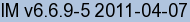
URL: https://legacy.imagemagick.org/Usage/masking/
|
![[IM Output]](https://legacy.imagemagick.org/Usage/masking/alpha_on.png)
![[IM Output]](https://legacy.imagemagick.org/Usage/masking/alpha_opaque.png)
![[IM Output]](https://legacy.imagemagick.org/Usage/masking/alpha_opaque_matte.png)
![[IM Output]](https://legacy.imagemagick.org/Usage/masking/a_compose.jpg)
![[IM Output]](https://legacy.imagemagick.org/Usage/masking/a_border.jpg)
![[IM Output]](https://legacy.imagemagick.org/Usage/masking/heart_mask.gif)
![[IM Output]](https://legacy.imagemagick.org/Usage/masking/compose_screen.png)
![[IM Output]](https://legacy.imagemagick.org/Usage/masking/koala_region_trans.gif)
![[IM Output]](https://legacy.imagemagick.org/Usage/masking/zelda_text.jpg)
![[IM Output]](https://legacy.imagemagick.org/Usage/masking/alpha_off.png)
![[IM Output]](https://legacy.imagemagick.org/Usage/masking/alpha_extract.png)
{kind=link}
{kind=link}
{kind=link}
{kind=link}
{kind=link}
{kind=link}
{kind=link}
{kind=link}
{kind=link}
{kind=link}
{kind=link}
{kind=link}
{kind=link}
{kind=link}
{kind=link}
{kind=link}
{kind=link}
{kind=link}
{kind=link}
{kind=link}
{kind=link}
{kind=link}
{kind=link}
{kind=link}
{kind=link}
{kind=link}
{kind=link}
{kind=link}
{kind=link}
{kind=link}
{kind=link}
{kind=link}
{kind=link}
{kind=link}
{kind=link}
{kind=link}
{kind=link}
{kind=link}
{kind=link}
{kind=link}
{kind=link}
{kind=link}
{kind=link}
{kind=link}
{kind=link}
{kind=link}
{kind=link}
{kind=link}
{kind=link}
{kind=link}
{kind=link}
{kind=link}
{kind=link}
{kind=link}
{kind=link}
{kind=link}
{kind=link}
{kind=link}
{kind=link}
{kind=link}
{kind=link}
{kind=link}
{kind=link}
{kind=link}
{kind=link}
{kind=link}
{kind=link}
{kind=link}
{kind=link}
{kind=link}
{kind=link}
{kind=link}
{kind=link}
{kind=link}
{kind=link}
{kind=link}
{kind=link}
{kind=link}
{kind=link}
{kind=link}
{kind=link}
{kind=link}
{kind=link}
{kind=link}
{kind=link}
{kind=link}
{kind=link}
{kind=link}
{kind=link}
{kind=link}
{kind=link}
{kind=link}
{kind=link}
{kind=link}
{kind=link}
{kind=link}
{kind=link}
{kind=link}
{kind=link}
{kind=link}
{kind=link}
{kind=link}
{kind=link}
{kind=link}